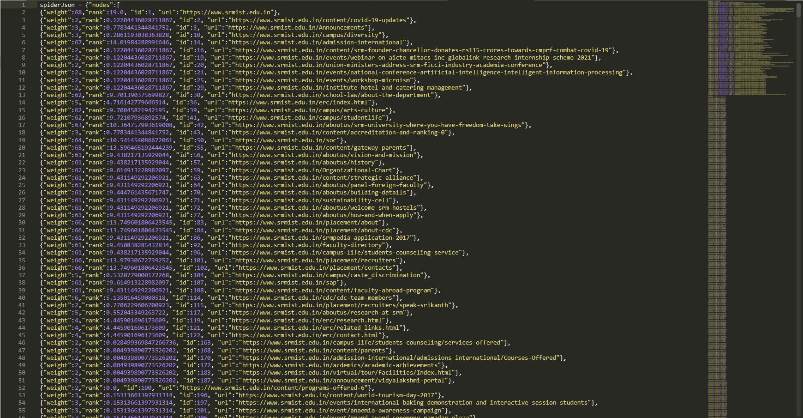

If you don't see a chart above, check the JavaScript console. You may need to use a different browser.
Initially a Python program runs and asks you to enter an URL and how many pages you want to retrieve from that URL. Then the Python program crawls a web site and pulls a series of pages into the database, recording all the URLs in a table named Pages with Values id, url, parsed(HTML) and sets the default rank of all URLs as 1.0, then it computes links between URLs and enters in a table named links which inludes every URL from Pages table and the id of the URLs they link to. Then once we have enough number of webpages in the database then another Python program runs to compute the ranking of these retrieved webpages based on the inbound and outboound links present on each of these webpages. The rank algorithm uses the link structure of the web pages to find the page rank.
Then aother Python program runs to fetch the data from the database and create a JSON data file which can be read by the HTML for visualization.
Finally This HTML shows an automatic layout of the nodes and links using d3.py SVG. You can click and drag any node and you can also double click on a node to find the URL that is represented by the node.